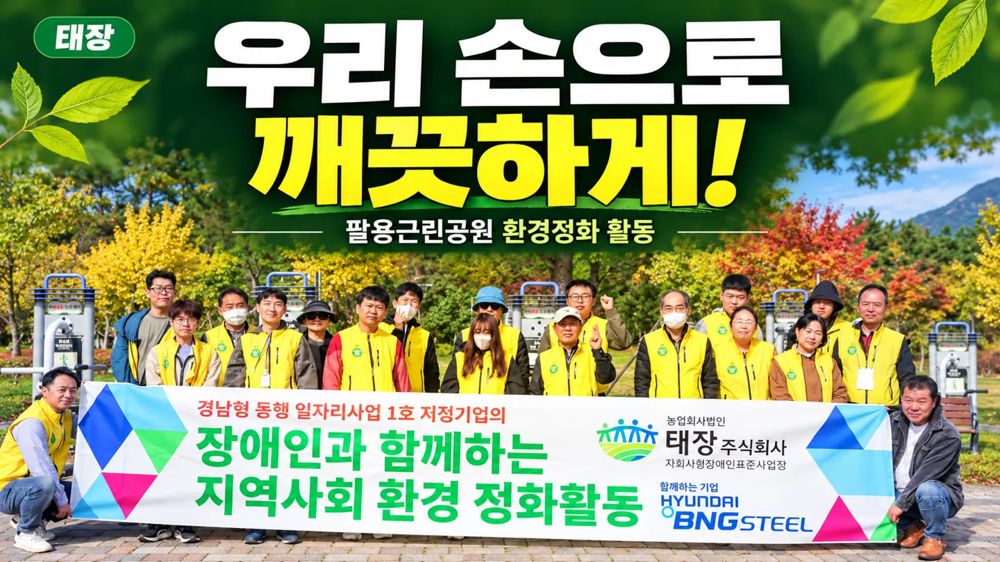
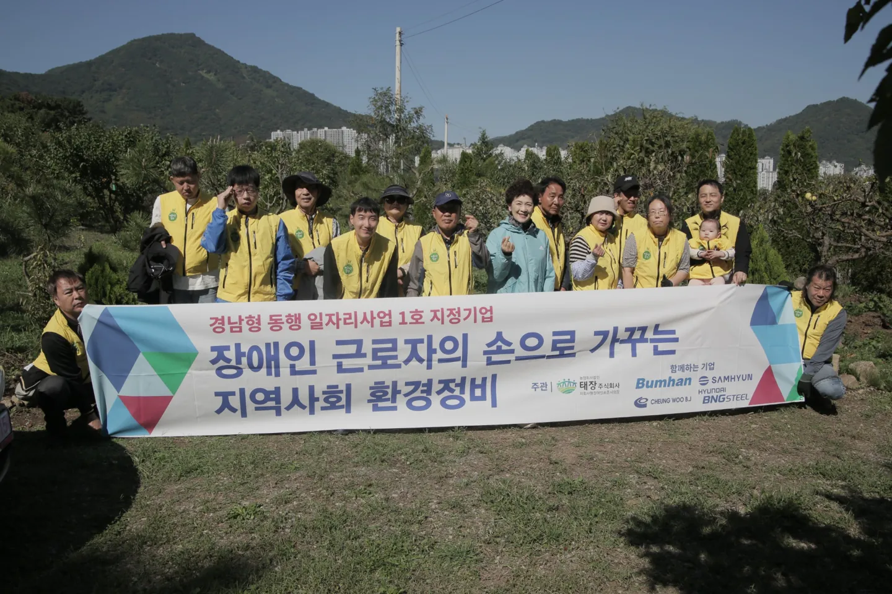
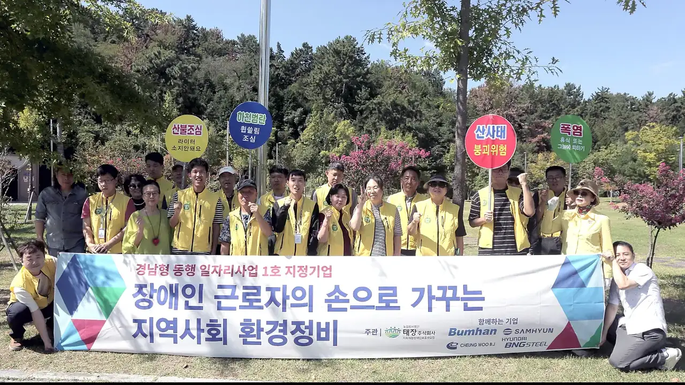
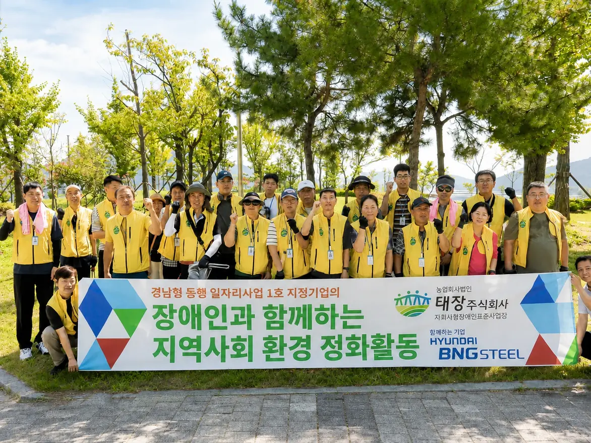

다섯 번째 환경정비 활동을 진행했습니다
태장은 2026년 10월 23일 다섯 번째 지역사회 환경정비 활동을 진행했습니다.
자세히 보기 →태장이 함께한 환경정비 활동을 최신순으로 모았습니다.
현재 공개된 활동 5건

태장은 2026년 10월 23일 다섯 번째 지역사회 환경정비 활동을 진행했습니다.
자세히 보기 →
태장은 2026년 10월 14일 네 번째 지역사회 환경정비 활동을 진행했습니다.
자세히 보기 →
태장이 세 번째 지역사회 환경정비 활동을 진행하며 참여자들과 함께 현장에 나섰습니다.
자세히 보기 →
태장이 두 번째 지역 환경정비 활동을 진행하며 참여자들과 함께 현장 정비에 나섰습니다.
자세히 보기 →
태장의 첫 지역사회공헌 활동으로 임직원이 함께 주변 환경을 정비했습니다.
자세히 보기 →